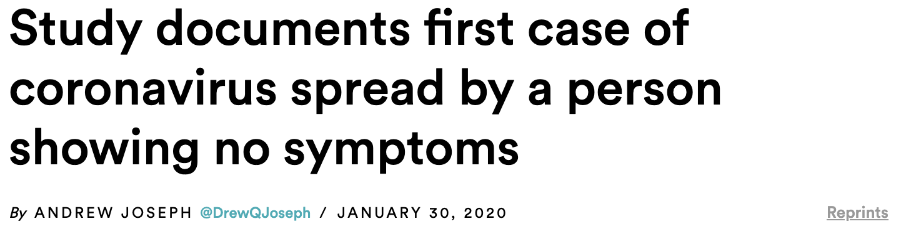

This visualization starts its journey on February 1st, 2020, when COVID-19 had been found in only 5 states, with the highest case number in a state being 3 in California. Much of the major media coverage at the time was still focused on China, with limited discussion of community spreading or mask wearing, topics that would only enter the American lexicon much later in the pandemic. At this point in time, most of the policy initiatives were on blocking people who had been in China from entering the United States and canceling future flights from China.
Also of note, a day before February 1st it was revealed by the New England Journal of Medicine that the novel coronavirus could be spread by people who weren't displaying any symptoms of the virus.
